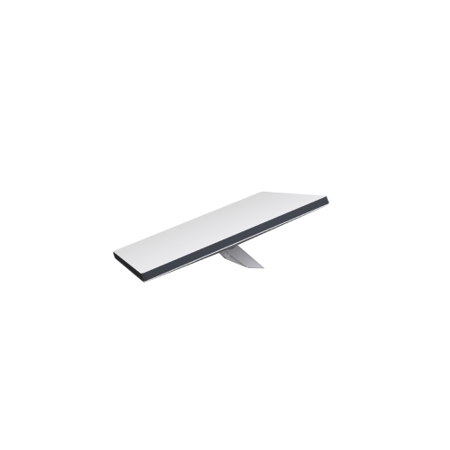
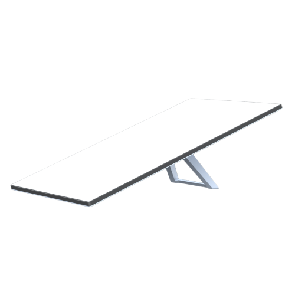

A Starlink oferece os seguintes modelos de receptores para internet via satélite:
MINI

A Starlink Mini é um kit compacto e portátil que pode caber facilmente em uma mochila e que foi
projetado para fornecer internet de alta velocidade e baixa latência em qualquer lugar.
PADRÃO

Indicado para usuários residenciais e uso cotidiano de aplicativos da internet, como streaming,
chamadas de vídeo, jogos on-line e muito mais. Acompanhe as atualizações de lançamento sobre este
produto aqui.
PADRÃO AUTODIRECIONÁVEL
Indicado para usuários residenciais e uso cotidiano de aplicativos da internet, como streaming,
chamadas de vídeo, jogos on-line e muito mais.
ALTO DESEMPENHO
Indicado para usuários avançados, empresas e aplicativos corporativos. Permite velocidades melhores
em altas temperaturas, pode se conectar a mais satélites e é mais resistente a ambientes extremos.
ALTO DESEMPENHO PLANO
Projetado para uso móvel e ambientes desafiadores. Com um amplo campo de visão e recursos de GPS
aprimorados, é possível se conectar a mais satélites, possibilitando conectividade uniforme em qualquer
lugar. O equipamento foi projetado para instalação permanente e é mais resistente a ambientes extremos.
Atualmente, apresenta a única antena indicada para uso em movimento em países aprovados.
Os produtos tem como objetivo captarem o sinal de uma constelação de milhares de satélites de baixa órbita que
garantem uma cobertura global e uma latência reduzida, diferenciando-se das tradicionais soluções de internet
por satélite. Os diferenciais mercadológicos da Starlink incluem a capacidade de fornecer internet rápida e
estável em regiões onde as opções terrestres são limitadas ou inexistentes, e a facilidade de instalação e uso
de seus equipamentos, basta escolher o melhor receptor de acordo com cada necessidade e bolso. O público-alvo
da Starlink abrange tanto consumidores residenciais em áreas rurais e isoladas quanto empresas que necessitam
de conectividade robusta em locais remotos, como mineradoras, agricultores e organizações de socorro em desastres.